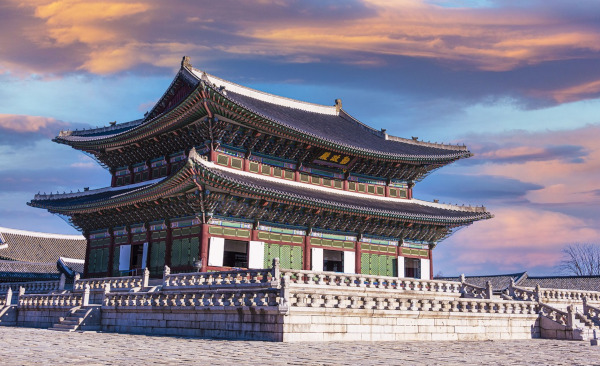
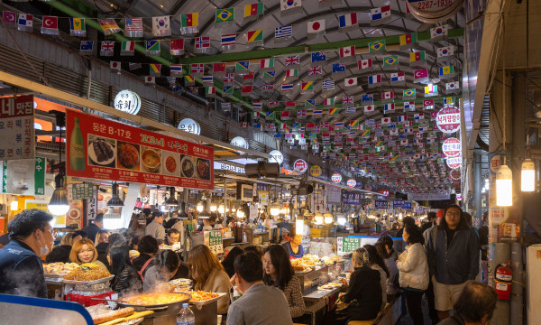
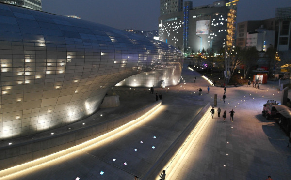
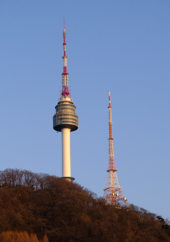
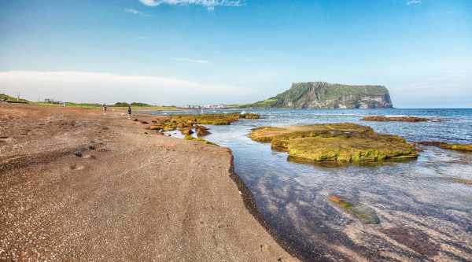
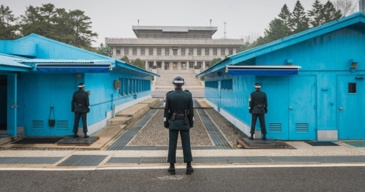

Coreia do Sul: Onde a Tradição Encontra a Modernidade
A Coreia do Sul é um destino incrível que combina uma história rica e milenar com a modernidade tecnológica e cultural do século XXI. Localizada na península coreana, é um país que se destaca tanto por suas tradições culturais profundamente enraizadas quanto por seu desenvolvimento tecnológico impressionante. O país é famoso por suas cidades vibrantes, templos antigos, paisagens naturais deslumbrantes e a explosão da cultura pop coreana, como o K-pop e os dramas coreanos.
Documentação necessária
Os brasileiros não precisam de visto para entrar na Coreia do Sul se forem permanecer por no máximo 90 dias, mas deve levar seu passaporte com validade maior que o período de viagem.
Entrar no país é muito tranquilo, é quase como se estivesse fazendo uma viagem doméstica, mas recomendo ter sempre à mão a carteira de vacinação com a vacina de febre amarela em dia.
Idioma
Embora o inglês seja falado em áreas turísticas e por jovens, aprender algumas palavras em coreano pode ser útil e bem-visto pelos locais. Palavras como "annyeonghaseyo" (olá) e "kamsahamnida" (obrigado) são simples, mas podem melhorar a experiência com os habitantes.
Moeda
A moeda utilizada na Coreia do Sul é o won sul-coreano. Não existe uma versão de centavos ou cents no won. Sendo assim, 100 wons equivalem a cerca de 10 centavos de dólar e 1000 wons a um pouco menos de 1 dólar. Por exemplo, você consegue comer uma refeição simples por apenas 5000 wons, o que gira em torno de 5 dólares.
A forma mais fácil de garantir que você não terá problemas em trocar seu dinheiro é levar tudo em dólar. Chegando em Seul, troque uma pequena quantia no aeroporto, onde as taxas são mais altas. O restante você pode trocar em Myeongdong. Por ser um centro comercial bastante movimentado de Seul, há diversas casas de câmbio com taxas menores.
Costumes e etiqueta
A Coreia do Sul é um país onde as tradições e o respeito são muito valorizados. Algumas dicas incluem tirar os sapatos ao entrar em uma casa, cumprimentar com uma leve reverência e, ao comer, nunca levantar sua tigela da mesa (ao contrário de outras culturas asiáticas). Presentear com ambas as mãos também é uma forma importante de mostrar respeito.
Época certa para viajar
O clima na Coreia do Sul varia bastante ao longo das estações, com verões quentes e úmidos e invernos frios e secos. As melhores épocas para visitar o país são durante a primavera (abril a junho) e o outono (setembro a novembro), quando as temperaturas são mais amenas e as paisagens estão repletas de flores ou folhas coloridas.
Além disso, a Coreia do Sul é conhecida por seus festivais sazonais, que acontecem durante todo o ano. Durante a primavera, por exemplo, ocorre o Festival das Flores de Cerejeira, quando as árvores de cerejeira estão em plena floração e os parques se enchem de cor e perfume. Já no outono, acontece o Festival das Folhas de Outono, quando as montanhas se transformam em um verdadeiro espetáculo de cores.
Lugares turísticos na Coreia do Sul
1. Gyeongbokgung

Fonte: Pixabay
Gyeongbokgung é um dos palácios mais icônicos e importantes da Coreia do Sul, localizado em Seul. Com uma história rica e uma arquitetura impressionante, o palácio é uma visita imperdível para os turistas que desejam explorar a cultura coreana.
Construído em 1395, durante a dinastia Joseon, Gyeongbokgung serviu como a residência principal dos reis e como o centro do governo.
Para visitar Gyeongbokgung, é necessário adquirir um ingresso. Os preços podem variar dependendo das áreas que você deseja visitar dentro do palácio. O valor dos ingressos é acessível, permitindo que mais pessoas possam desfrutar dessa experiência cultural única.
2. Gwangjang Market

O Gwangjang Market é um dos mercados mais antigos e vibrantes de Seul, fundado em 1905, tem uma história rica e é conhecido por oferecer uma variedade de produtos e alimentos tradicionais coreanos.
Localizado no distrito de Jongno-gu, o Gwangjang Market é um importante ponto turístico e um destino popular para os moradores locais. O mercado é famoso por sua atmosfera animada, barracas de comida de rua e lojas que vendem uma ampla gama de produtos, como roupas, tecidos, artesanatos e utensílios domésticos.
Uma curiosidade interessante sobre o Gwangjang Market é que ele é conhecido por ser um dos melhores lugares para experimentar a culinária de rua coreana. Os visitantes podem desfrutar de pratos tradicionais, como obindeng (panquecas de feijão mungo) e mayak gimbap (rolos de arroz recheados).
3. DDP │ Dongdaemun Design Plaza

Fonte: Pixabay
O DDP é um icônico centro cultural e de design localizado em Seul, Coreia do Sul. Inaugurado em 2014, o DDP foi projetado pela renomada arquiteta Zaha Hadid e se tornou um marco arquitetônico na cidade.
O DDP abriga uma variedade de espaços, incluindo galerias de arte, salas de exposição, teatros, lojas de design e espaços para eventos. É um local que celebra a criatividade e a inovação, promovendo a cultura do design e das indústrias criativas.
4. Namsan Seoul Tower

Fonte: Pixabay
Conhecida também como N Seoul Tower, a torre de cerca de 237 metros de altura transmite, de Seul, sinais de comunicação para toda a Coreia do Sul.
Sua presença na cidade é imponente, vista de diversos pontos de Seul, ficando ainda mais linda à noite, com sua iluminação especial.
Para os turistas, a torre – aberta ao público em 1980 – oferece ainda uma vista de 360º para a cidade de Seul.
5. Ilha de Jeju

A ilha fica no extremo sul da Coreia do Sul, sendo uma ilha vulcânica com praias e paisagens com crateras e pedras de lava. É lá que fica o Monte Hallasan, um vulcão inativo com 1.950 metros de altitude bem no centro da ilha e que é o ponto mais alto da Coreia do Sul. Ele é palco de caminhadas e trekkings, para quem gosta de ecoaventura.
E, outra atração da Ilha de Jeju é o Parque Jeju Loveland (já citado lá em cima), um parque inteiro dedicado ao amor e ao sexo (não para “fazer” sexo, mas um parque de diversões cujo tema é o sexo
6. A Zona Desmilitarizada (DMZ)

A DMZ é a conhecida Zona Desmilitarizada, a região que fica entre a Coreia do Norte e a Coreia do Sul. Apesar do nome, é a fronteira mais fortificadas do mundo.
Mas é possível conhecer em alguns dos tour pela região da DMZ Tours, que custam em média de U$50 por pessoa, quando você pode ver a fronteira em si, ir a um mirante de onde se vê as torres com as bandeiras dos dois países e, de quebra, visitar um antigo túnel militar, da época da guerra, que unia os dois países por baixo da terra.